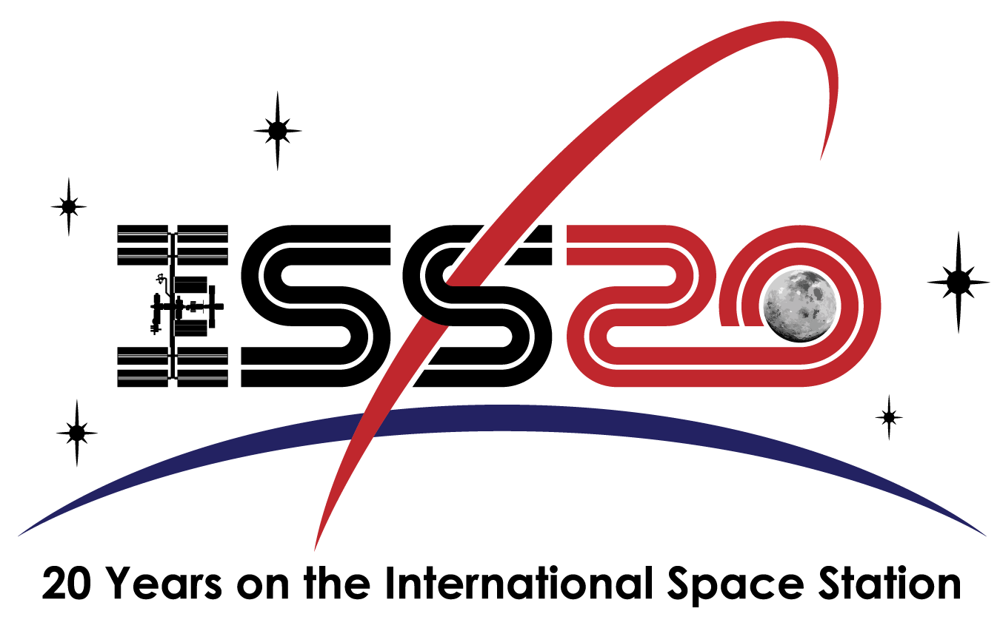

La sua costruzione è iniziata nel 1998, ed è stata ultimata nel 2017. Quest'anno si celebra il 20esimo anniversario della stazione, la quale rimarrà in funzione fino al 2024. E' in grado di ospitare fino a 6 membri dell'equipaggio. La funzione è quella di permettere agli astronauti di eseguire esperimenti in microgravità, impossibili da eseguire sulla terra. Inoltre vengono studiati gli effetti della permanenza nello spazio sugli astronauti. L'equipaggio della ISS non è sempre lo stesso. Questo cambia infatti attraverso le cosiddette spedizioni. Ogni missione dura all'incirca 6 mesi.
